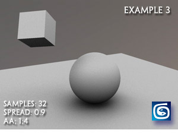
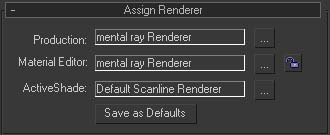
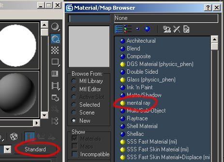
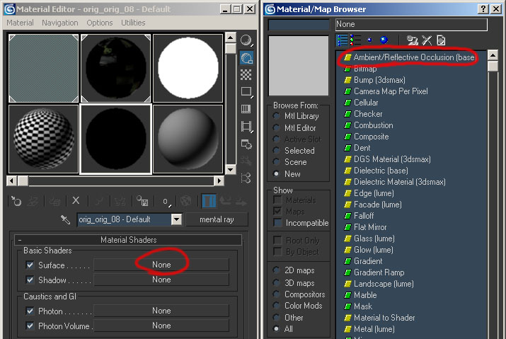
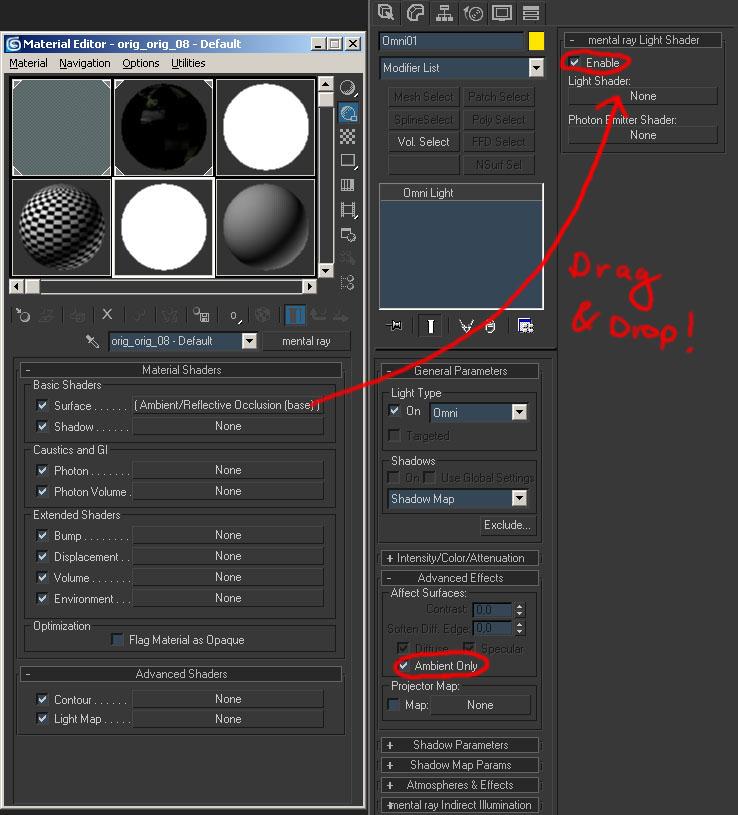
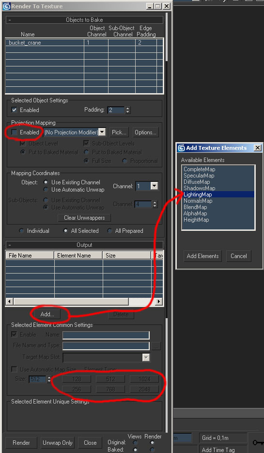
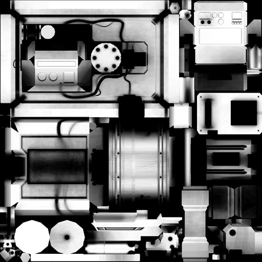
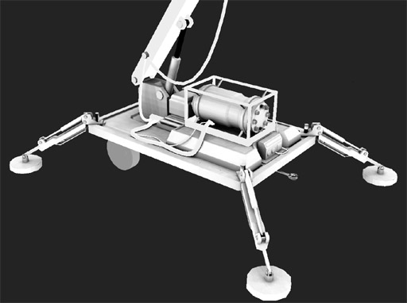

Окружающая окклюзия с Mental Ray
Объекты с собственной текстурой всегда должны иметь некоторую запеченную излучательность. Вы можете сделать это с помощью потолочного освещения, но это рендерится очень медленно и всегда имеет направление света.
С другой стороны, при использовании Ambient Occlusion области, закрывающие друг друга, визуализируются более темными и независимыми от источника света.

Вы можете использовать функцию рендеринга в текстуру, чтобы запечь окклюзию.
Сначала откройте настройки рендеринга и установите для рендеринга Mental Ray:

Затем создайте материал с помощью шейдера Mental Ray:

Назначьте Ambient / Reflective Occlusion слоту Surface Shader материала Mental Ray.

Настройте параметры шейдера, чтобы получить хорошие результаты. Количество образцов лучей является наиболее важным.
Теперь создайте всенаправленный свет. Зайдите в его параметры и установите для параметра «Affect Surfaces» значение «Только Ambient» (в разделе «Дополнительные эффекты»).
Затем включите шейдер mental may Light и добавьте к нему шейдер поверхности материала (перетащите):

Откройте диалог рендеринга в текстуру («0»). Выберите объект, который хотите запечь. Если у него есть перекрывающиеся UV-развертки, возникающие из-за разных идентификаторов материалов, отсоедините эти части, прежде чем продолжить.
Отключите отображение проекции и добавьте «LightingMap» в разделе «Вывод». Выберите желаемое разрешение текстуры.

Если вы хотите визуализировать сцену с помощью камеры, примените материал Mental Ray к объекту, и вы увидите фоновую окклюзию на визуализированном изображении.
Нажмите оказывать, игнорируйте все предупреждения Mental Ray и дождитесь завершения карты. При низком разрешении и сэмплах лучей текстура среднеполигонального объекта визуализируется менее чем за пару минут. При высоких настройках качества это может занять гораздо больше времени.
Это полученная «Dirtmap». Умножьте его на свою диффузную карту, чтобы получить убедительный эффект рассеянности. Он также очень полезен в качестве маски слоя для грязи или ржавчины, поскольку он имеет тенденцию скапливаться на закрытых частях объекта.

Если ваша текстура отображается черной, убедитесь, что вы назначили правильный рендерер и все настройки верны.
Пример объекта с картой грязи и 100% самоподсветкой:
